Como ya he comentado, hace unas semanas me hice con un HTC Desire HD y desde entonces he estado matando las esperas de autobús con un buen puñado de juegos. En esta ocasión vengo a hablaros de Pro Evolution Soccer 2011 para Android. Durante los últimos años he preferido FIFA a PES aunque decidí darle una oportunidad, total, en un móvil no busco simulación sino una partida rápida.
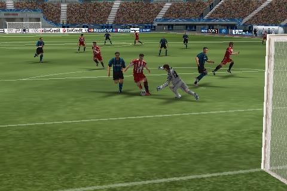
Jugabilidad directa
Es muy de agradecer poder arrancar el juego y comenzar un partido a los pocos segundos ya que no suelo dedicarle más de diez minutos de una sentada a ningún título móvil. Ya saben: viajes en autobús, salas de espera, visitas al WC, etc. Una vez empezamos un partido no es necesario un largo periodo de adaptación por lo que estaremos metiendo goles y enlazando jugadas en poco tiempo. Básicamente se traslada el espíritu simple, directo y arcade de las versiones mayores a la pantalla del terminal. En algunos momentos me recordó a esos juegos de fútbol de Mega Drive (en el buen sentido de la expresión).
PES no cuenta con la licencia de la LFP pero sí podremos jugar una Champions y controlar a varios de los equipos europeos de mayor importancia. Así mismo, se ofrece un modo entrenamiento, partidos rápidos y ligas personalizadas. La variedad es aceptable para lo que se espera de una versión como esta, tampoco voy a exigir que nos den un modo mánager, sería ridículo. Al final lo que importa es que sea divertido y PES 2011 para Android lo es.
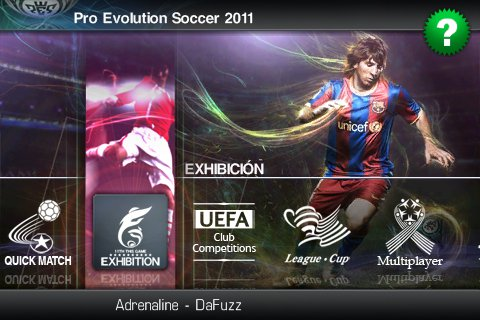
Control aceptable pero interfaz mal adaptada
Una de las mayores preocupaciones que tenía al probar una adaptación a móviles de una saga concebida para consolas de sobremesa era el control. En PES 2011 se nos da la posibilidad de elegir entre tres configuraciones de control distintas: un pad virtual de dos botones, un pad de un solo botón o el acelerómetro. Me he centrado sobre todo en la primera por ser la que te da más posibilidades y he de reconocer que no funciona del todo mal. No obstante, a veces no tocaba exactamente en la cruceta y el jugador se paraba desperdiciando así la jugada.
La interfaz es agradable pero emula demasiado a la de la versión de consolas y no funciona bien en una pantalla táctil. Se echa de menos un poco de feedback adicional cuando el usuario interactúa con los menús. Si le hubiesen dedicado tiempo a adaptar la interfaz como es debido, todos los botones se hundirían al pulsarlos o harían vibrar ligeramente el teléfono cuando en realidad sólo lo hacen los de algunas pantallas. No es un despropósito total pero Konami evidencia signos de falta de dedicación o experiencia en el terreno móvil.
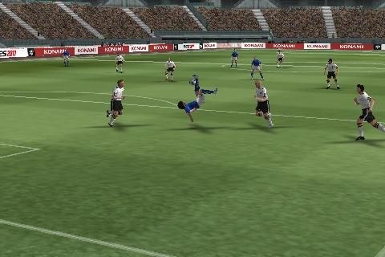
Gráficos sorprendentes en mi Android
No estoy acostumbrado a juegos técnicamente punteros en el terreno móvil por lo que PES 2011 me ha impresionado mucho. Todo es magnífico: desde la recreación de los estadios a los modelos 3D de los jugadores pasando por la suavidad con la que se mueve el conjunto. Quizás cuando pueda probar otros títulos 3D llenos de efectos chuflas me ponga el monóculo y mute en una especie de “graphics whore” pero creo que PES cumple y de sobra en este sentido.
Desconozco los requisitos mínimos para que funcione con dignidad pero en mi HTC Desire HD va como un tiro. No he sufrido ninguna ralentización y los tiempos de cargas son mínimos.
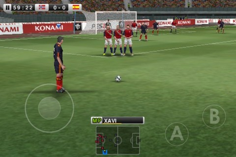
Para terminar
Es cierto que aún queda margen de mejora en lo que a interfaz y control se refiere pero Pro Evolution Soccer 2011 para Android me ha sorprendido gratamente por diversión y gráficos. El port le debe haber costado su dinerito a Konami, lo que evidencia el auge del mercado móvil en general y Android en particular. Es de agradecer que poco a poco más compañías de reconocida relevancia se dediquen al sistema operativo de Google para móviles.
Este nuevo vídeo muestra la carga de un escenario básico creado en Blender a partir de su exportación a formato DotScene. El sistema es capaz de cargar tanto objetos colisionables como fuentes de luz. En los próximos días profundizaré en la carga de escenarios. Así mismo, puede observarse el uso de la nueva versión de STC (sistema de colisiones de Sion Tower) lo que impide que el personaje atraviese objetos.
Estoy muy satisfecho con los avances aunque queda mucho camino por delante. ¡No pienso acomodarme!
Tras unas semanas de duro trabajo acabo de liberar la versión 0.2 de STC, el sistema de detección de colisiones de Sion Tower. Mientras implementaba la carga de niveles con elementos colisionables (de la que hablaré otro día) he probado más a fondo la primera versión descubriendo muchos puntos en los que la mejora era necesaria.
Muchas líneas del blog han versado sobre este tema. Si aún no conoces las funcionalidades de STC puedes leer el lanzamiento de su primera versión. Si deseas documentación en profundidad sobre su diseño e implementación, puedes acudir a la serie de artículos al respecto. Más detalles sobre la nueva versión a continuación.
Changelog
Clase OrientedBox.
Nuevos tests de colisión para la forma OrientedBox.
Método CollisionManager::addCollisionTest para poder añadir o modificar tests de colisión a gusto del usuario.
Mejoras de rendimiento.
Correcciones de bugs.
3 tipos de callbacks: comenzar colisión, durante colisión y finalizar colisión.
Descarga
Como siempre, podéis descargar el código fuente desde la Forja de Red Iris (incluye documentación generada con Doxygen):
Esta es la quinta y última entrega de la serie de artículos sobre el sistema de detección de colisiones de Sion Tower (STC). Trataremos las últimas clases que nos queda por ver: Body, CollisionManager y GameObject. Finalmente hablaré de las correcciones y mejoras que implementaré lo antes posible de cara a una futura versión.
La clase Body
Un Body representa la parte colisionable de un objeto y está formado por un vector de formas (Shape) y una transformación (traslación con respecto al origen, escala y rotación). Los cuerpos tienen un tipo (entero) que permite agruparlos y filtrarlos en la detección de colisiones. Para manejar las colisiones entre dos cuerpos, debemos cruzar las formas de ambos en coordenadas del mundo, en ningún caso locales al objeto. Aplicar la transformación de cada cuerpo a cada forma en todas las iteraciones del bucle de juego es demasiado costoso. Por ello, he decidido almacenar un segundo vector de formas en coordenadas del mundo, en el eterno dilema de la eficiencia tempo/memoria ha ganado el tiempo en este caso.
¿Por qué no tener un sólo vector de formas en coordenadas del mundo? En la carga de niveles utilizaré una fábrica que guardará instancias de objetos como muros, mobiliario y otros elementos. Necesitaré copiarlos y por eso es más cómodo emplear coordenadas locales y luego transformarlas una sola vez.
La clase CollisionManager
El gestor de colisiones sigue el patrón de diseño Singleton y lleva el registro de todos los cuerpos colisionables de la escena. Es posible añadir o eliminar cuerpos según nos convenga. Una vez en cada iteración del bucle de juego es recomendable llamar al método checkCollisions.
Sólo se comprobarán colisiones entre cuerpos para cuyo tipo exista un callback. Los callbacks son objetos función de Boost que reciben dos punteros a Body y no devuelven nada. Utilizando boost:bind podemos crear un objeto boost:function y añadir el callback para dos cuerpos de un tipo determinado. Por ejemplo, podemos hacer que el método callbackSpellEnemy sea llamado cuando colisionen cuerpos de los supuestos tipos Spell (cuyo número podría ser el 4) y Enemy (cuyo número podría ser el 8).
En el método checkCollisions no sólo se filtran los cuerpos para los que existe un callback definido sino que no se comprueban aquellos que están a una distancia prudencial. Soy consciente de que para cantidades ingentes de elementos este particionado no es suficiente aunque por el momento funciona correctamente.
La clase GameObject
La última clase que nos quedaba por repasar era GameObject, como ya he mencionado se encarga de encapsular la parte visual (SceneNode + Entity) y colisionable (Body) de los elementos de juego. Proporciona métodos para actualizar posición, escala y rotación pero si lo deseamos se nos permite acceder al nodo o al cuerpo que contiene. Si hacemos modificaciones sobre el nodo o el cuerpo tendremos que sincronizar la otra parte empleando los métodos synchronizeBody o synchronizeNode según corresponda.
Cuenta con un método virtual update que no hace nada y está diseñado para ser sobrecargado. No es una clase abstracta de la que no puedan existir instancias aunque lo usual es heredar de ella y aportar un comportamiento concreto.
Próximas versiones
El sistema de detección de colisiones de Sion Tower presenta un amplio margen de mejora. Tengo anotada una buena lista y ya he conseguido implementar algunas de ellas. En la futura versión 0.2 de la mini biblioteca encontraréis la forma OrientedBox (OBB), nuevos tests de colisión, una API más extensible y muchas correcciones de bugs.
En la cuarta entrega de la serie de artículos de documentación sobre el sistema de detección de colisiones de Sion Tower (STC) trataremos en profundidad los tests de colisión. Hasta ahora habíamos visto como funciona la clase abstracta Shape y sus implementaciones así como el Collision Dispatching. Este texto no pretende demostrar la validez de los algoritmos expuestos por la mediana complejidad que algunos entrañan, para una explicación más extensa sugiero acudir a las referencias contenidas en la sección de bibliografía.
Para cada test se ofrece una breve explicación, un diagrama aclaratorio y el algoritmo en C++ utilizando Ogre3D y las clases que hemos visto hasta el momento.
Teorema del plano de separación
El Teorema del eje de separación (separating axis theorem) resulta extremadamente útil en la detección de colisiones. Este teorema asegura que dados dos objetos convexos en un plano 2D existe una línea sobre la cual, las proyecciones de los dos objetos no se solapan si y sólo si los objetos son disjuntos (no tienen puntos en común). Esta línea se conoce como eje de separación. En un espacio tridimensional el eje de separación se convierte en un plano de separación. El siguiente diagrama ilustra el teorema.
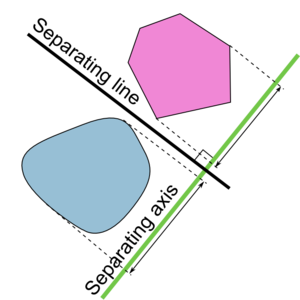
En muchos tests buscaremos el plano de separación, puede que existan varios pero en el momento que encontremos el primero podremos asegurar que los objetos no colisionan (suponiendo que sus formas son convexas). En cualquier videojuego lo normal es que dos objetos cualesquiera no colisionen, por lo que es más eficiente descartar posibles intersecciones cuanto antes. Buscando planos de separación.
Test Sphere-Sphere
El test entre dos esferas es el más sencillo y rápido de todos. Basta con comprobar si la distancia entre los centros de ambas esferas es menor que la suma de sus radios, en tal caso existiría colisión.
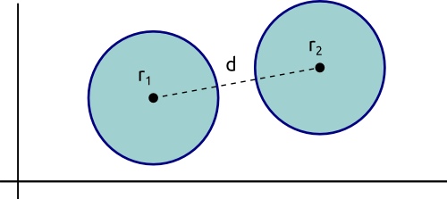
Para calcular la distancia entre dos puntos es necesario una raíz cuadrada pero éstas son extremadamente caras. Podemos comparar la distancia al cuadrado con el cuadrado de la suma de los radios, una expresión equivalente y de mayor eficiencia.
bool Shape::getCollisionSphereSphere(Shape* shapeA, Shape* shapeB) {
// Hacemos la conversión (estamos seguros de que son esferas)
Sphere* sphereA = static_cast<sphere *>(shapeA);
Sphere* sphereB = static_cast</sphere><sphere *>(shapeB);
// Hacemos el test
Ogre::Vector3 s = sphereA->getCenter() - sphereB->getCenter();
Ogre::Real totalRadius = sphereA->getRadius() + sphereB->getRadius();
return (s.squaredLength() < = totalRadius * totalRadius);
}
Test AABB-AABB
En la intersección entre cajas alineadas con los ejes emplearemos el teorema del plano de separación. Proyectamos las cajas sobre cada uno de los tres ejes y si algunas de las proyecciones no se solapan podremos asegurar que no existe colisión entre las AABB. El siguiente diagrama ilustra el test.
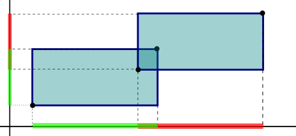
bool Shape::getCollisionAABBAABB(Shape* shapeA, Shape* shapeB) {
// Hacemos la conversión (estamos seguros de que son AABBs)
AxisAlignedBox* aabb1= static_cast<axisalignedbox *>(shapeA);
AxisAlignedBox* aabb2 = static_cast</axisalignedbox><axisalignedbox *>(shapeB);
// Hacemos el test
return (aabb1->getMaxPos().x > aabb2->getMinPos().x &&
aabb1->getMinPos().x < aabb2->getMaxPos().x &&
aabb1->getMaxPos().y > aabb2->getMinPos().y &&
aabb1->getMinPos().y < aabb2->getMaxPos().y &&
aabb1->getMaxPos().z > aabb2->getMinPos().z &&
aabb1->getMinPos().z < aabb2->getMaxPos().z);
}
Test Plane-Plane
Los planos son infinitos por lo que la única situación en la que dos planos no colisionan es cuando estos son paralelos y no están a la misma distancia del origen. La orientación de los planos está definida por su vector normal. Si las dos normales son paralelas y la distancia con respecto al origen no coincide podremos asegurar que los planos no colisionan. Dos vectores son paralelos si su producto escalar es igual a 1.
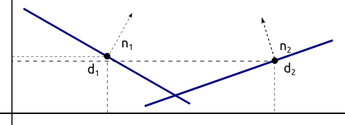
bool Shape::getCollisionPlanePlane(Shape* shapeA, Shape* shapeB) {
// Hacemos la conversión (estamos seguros de que son Planes)
Plane* planeA = static_cast<plane *>(shapeA);
Plane* planeB = static_cast</plane><plane *>(shapeB);
// Hacemos el test
Ogre::Vector3 normalA = planeA->getNormal().normalisedCopy();
Ogre::Vector3 normalB = planeB->getNormal().normalisedCopy();
return normalA.dotProduct(normalB) != 1;
}
Test Sphere-AABB
En este test se pueden producir dos casos en los que existe intersección entre los objetos. El primero se da cuando el centro de la esfera está contenida en el AABB mientras que el segundo tiene lugar cuando el centro está fuera de la caja pero existe intersección (el diagrama ilustra el segundo caso). En primer lugar comprobamos si el centro de la esfera está dentro de la caja. Posteriormente recorremos los vértices del AABB y elegimos el más cercano al centro de la esfera. Si la distancia entre ambos es menor que el radio de la esfera las dos formas colisionan.
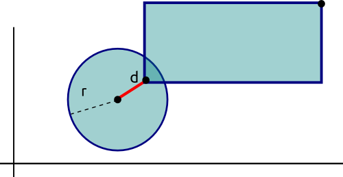
De nuevo, utilizamos el cuadrado de la distancia para conseguir una mayor eficiencia.
bool Shape::getCollisionSphereAABB(Shape* shapeA, Shape* shapeB) {
// Hacemos la conversión (estamos seguros de que A es Sphere y B es AABB)
Sphere* sphere;
AxisAlignedBox* aabb;
if (shapeA->getType() == SPHERE) {
sphere = static_cast<sphere *>(shapeA);
aabb = static_cast<axisalignedbox *>(shapeB);
} else {
sphere = static_cast<sphere *>(shapeB);
aabb = static_cast<axisalignedbox *>(shapeA);
}
// Hacemos el test
Ogre::Real s = 0;
Ogre::Real d = 0;
Ogre::Vector3 center = sphere->getCenter();
Ogre::Vector3 minPos = aabb->getMinPos();
Ogre::Vector3 maxPos = aabb->getMaxPos();
// Comprobamos si el centro de la esfera está dentro del AABB
bool centerInsideAABB = (center.x < = maxPos.x &&
center.x >= minPos.x &&
center.y < = maxPos.y &&
center.y >= minPos.y &&
center.z < = maxPos.z &&
center.z >= minPos.z);
if (centerInsideAABB)
return true;
// Comprobamos si la esfera y el AABB se intersectan
for (int i = 0; i < 3; ++i) {
if (sphere->getCenter()[i] < aabb->getMinPos()[i]) {
s = sphere->getCenter()[i] - aabb->getMinPos()[i];
d += s * s;
} else if (sphere->getCenter()[i] > aabb->getMaxPos()[i]) {
s = sphere->getCenter()[i] - aabb->getMaxPos()[i];
d += s * s;
}
}
return (d < = sphere->getRadius() * sphere->getRadius());
}
Test Sphere-Plane
Comprobar si una esfera colisiona con un plano es tan sencillo como obtener la distancia entre ambos y compararla con el radio de la esfera como hemos hecho en otras ocasiones. La distancia entre el centro y el punto que conocemos del plano no es la distancia real entre ambas formas. Para calcular la distancia real tendremos que proyectar el vector p-c (punto del plano – centro de la esfera) sobre la normal del plano.
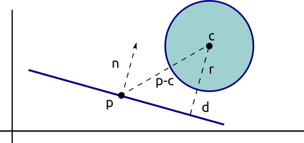
Sólo nos es necesario el cuadrado de la distancia y lo comprobaremos con el cuadrado del radio (para evitarnos utilizar una raíz cuadrada).
bool Shape::getCollisionPlaneSphere(Shape* shapeA, Shape* shapeB) {
// Hacemos la conversión (estamos seguros de que A es Plane y B es Sphere)
Plane* plane;
Sphere* sphere;
if (shapeA->getType() == PLANE) {
plane = static_cast<plane *>(shapeA);
sphere = static_cast<sphere *>(shapeB);
} else {
plane = static_cast<plane *>(shapeB);
sphere = static_cast<sphere *>(shapeA);
}
// Hacemos el test
// Distancia del centro de la esfera al plano
Ogre::Vector3 v = sphere->getCenter() - plane->getPosition();
Ogre::Vector3 n = plane->getNormal().normalisedCopy();
Ogre::Real d = abs(n.dotProduct(v));
// Si d < = radio, hay colisión
return d <= sphere->getRadius();
}
Test AABB-Plane
En el test entre AABB y plano calculamos el vértice más lejano y el más cercano al plano (pmin y pmax respectivamente). Si cada punto está a un lado distinto del plano podemos asegurar que ambas formas colisionan.
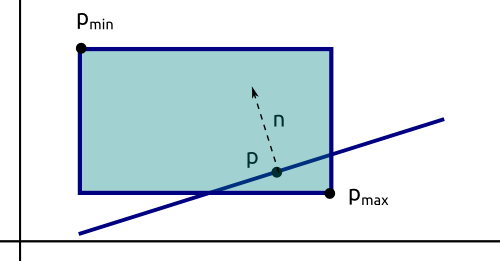
bool Shape::getCollisionPlaneAABB(Shape* shapeA, Shape* shapeB) {
// Hacemos la conversión (estamos seguros de que A es Plane y B es AABB)
Plane* plane;
AxisAlignedBox* aabb;
if (shapeA->getType() == PLANE) {
plane = static_cast<plane *>(shapeA);
aabb = static_cast<axisalignedbox *>(shapeB);
} else {
plane = static_cast<plane *>(shapeB);
aabb = static_cast<axisalignedbox *>(shapeA);
}
// Hacemos el test
Ogre::Vector3 p;
Ogre::Vector3 n;
for (int i = 0; i < 3; ++i) {
if (plane->getNormal()[i] >= 0) {
p[i] = aabb->getMaxPos()[i];
n[i] = aabb->getMinPos()[i];
} else {
p[i] = aabb->getMaxPos()[i];
n[i] = aabb->getMinPos()[i];
}
}
// Si p está en un lado diferente del plano que n, hay intersección
Ogre::Real d1 = plane->getNormal().dotProduct(p - plane->getPosition());
Ogre::Real d2 = plane->getNormal().dotProduct(n - plane->getPosition());
return ((d1 < = 0 && d2 >= 0) || (d1 >= 0 && d2 < = 0));
}
Bibliografía
Como podéis comprobar, hay un poco más de fundamento detrás de estos tests de lo que se ha explicado en la secciones anteriores. Para obtener más información sobre este interesante tema, recomiendo las siguientes lecturas (todo en inglés):
Real Time Collision Detection (Christer Ericson ): excepcional libro que cubre todo lo relacionado sobre la detección de colisiones en 3D escrito por un trabajador de Sony Computer Entertainment America.
Metanet software “Collision detection and response”: explicación teórica sobre la detección de colisione. Cuenta con ejemplos gráficos interactivos para ilustrar cada concepto. Me la recomendó el compañero José Tomás Tocino.
En el siguiente artículo lo dedicaremos a las clases Body y CollisionManager del sistema de detección de colisiones de Sion Tower.